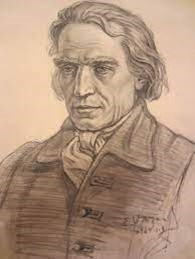

Kristijonas Donelaitis
 Kristijonas Doneláitis (1714 01 01 – 1780 02 18) gyveno dabar jau išnykusiuose Lazdynėliuose, buvo lietuvių poetas, evangelikų liuteronų kunigas. Lietuvių grožinės literatūros pradininkas. Donelaitis buvo išsilavinęs Apšvietos žmogus. 1740 baigė Karaliaučiaus universiteto Evangelikų liuteronų teologijos fakultetą, lankė lietuvių kalbos seminarą. 1740–42 buvo Stalupėnų mokyklos kantorius, 1742–43 rektorius. Nuo 1743 iki gyvenimo pabaigos buvo Tolminkiemio klebonas. Antraisiais klebonavimo metais poetas vedė Oną Reginą Olefant. Vaikų nesusilaukė ir tuo, sakė, džiaugęsis, nes gausesnės šeimos nebūtų galėjęs išlaikyti. Klebono pareigas atliko stropiai: rūpinosi žmonių sielomis ir jų apšvieta. Sekmadieniais ir per šventes bažnyčioje sakydavo vokiškus ir lietuviškus pamokslus. Donelaitis labai vertino draugystę – savo klebonijoje priimdavo kaimynus, skambindavo jiems pasidirbtais instrumentais, dainuodavo paties sukurtas dainas, skaitydavo lietuviškas eiles. Donelaičio gyvenimo laikotarpiu dauguma lietuvių valstiečių privalėjo eiti baudžiavą. Prūsijos vokiečiai ir atvykėliai neretai į juos žvelgė su pašaipa ir panieka. Donelaitis stojo greta tų kunigų, kurie ėmėsi ginti lietuvių bendruomenės teises, skatinti lietuvio žemdirbio savigarbą ir orumą. Taip pat jis pastatė mokyklą, klebonų našlių namą, perstatė kleboniją, bažnyčią. Be poezijos, kūrė muzikines kompozicijas, gamino klavyrus, barometrus, termometrus, mikroskopus, veisė sodą.
Kūryba
K. Donelaičio kūrybai būdinga baroko literatūros ir Šviečiamojo amžiaus literatūros bruožai. Jo literatūrinį palikimą sudaro šešios lietuviškos pasakėčios – „Lapės ir gandro čėsnis“, „Rudikis jomarkininks“, „Šuo Didgalvis“, „Pasaka apie šūdvabalį“, „Vilks provininks“, „Aužuols gyrpelnys“; trys vokiški eilėraščiai – „Tamsybių Dievas“, „Kiekvienam daryti gera“ ir „O greit slenką laikai“. du ankstyvieji „Metų“ fragmentai, kuriuos autorius yra pavadinęs „Pričkaus pasaka apie lietuvišką svodybą“ ir „Tęsiniu“, vėliau ir žymiausias, įtakingiausias jo kūrinys „Metai“. K. Donelaitis pats „Metų“ neišleido, manoma dėl to, kad šis kūrinys tais laikais būtų buvęs per daug maištingas, jame per daug atvirai buvo išsakomos autoriaus politinės nuostatos. Donelaičiui mirus, jo žmona perdavė vyro rankraščius šeimos bičiuliui Jordanui. Kaimyninės Gerviškėnų parapijos klebonas Jonas Frydrichas Holfeltas, susižavėjęs Donelaičio kūryba, pasidarė jo pasakėčių ir „Metų“ nuorašus. Būtent šie nuorašai vėliau leido atkurti poemos visumą. Mat Karaliaučiaus universiteto profesorius Liudvikas Gediminas Rėza, ketinęs išleisti Donelaičio kūrybą, iš Jordano spėjo gauti tik dviejų „Metų“ dalių – „Pavasario linksmybių“ ir „Vasaros darbų“ – autografus. Kitos dvi poeto ranka rašytos dalys – „Rudenio gėrybės“ ir „Žiemos rūpesčiai“ – žuvo per 1812 m. karą. Išlikusius originalus ir nuorašus Rėza sudėjo į vieną kūrinį, pavadino jį „Metais“, išvertė į vokiečių kalbą ir 1818 m. Karaliaučiuje kartu su vertimu išspausdino.
Atminimo įamžinimas
Minint poeto 250-ąsias gimimo metines, Vilniaus universiteto kriptoje buvo pastatytas skulptoriaus Konstantino Bogdano sukurtas paminklas. Šio paminklo skulptoriai: Mindaugas Šnipas, Ramūnas Alminas, Jonas Gencevičius ir Vytautas Mikšionis. Yra sukurti 2 dokumentiniai filmai apie K. Donelaičio gyvenimą. Režisieriaus Juozo Saboliaus filmas apie Kristijono Donelaičio gyvenimą, veiklą, jį menančias vietas - „Ruduo Tolminkiemyje“ (2010) ir režisieriaus Algirdo Dausos filmas, skirtas poeto, lietuvių literatūros klasiko Kristijono Donelaičio 250 metinėms, pasakojantis apie būrų dainiaus gyvenimo kelią - „Sveiks, svieteli margs“ (1964).
Kristijono Donelaičio kūrybos galima pasiklausyti LRT mediatekoje.
Galerija